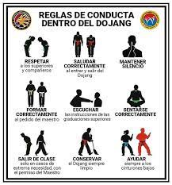
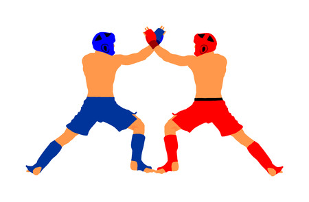

Reglas y Reglamentos
Las MMA tienen reglas y regulaciones que garantizan la seguridad de los atletas y la equidad en la competencia. Conoce las reglas básicas que rigen este emocionante deporte de combate.



Categorías de peso
- Peso mosca: hasta 48,7 kg
- Peso gallo: entre 48,7 kg y 61,2 kg
- Peso pluma: entre 61,2 kg y 65,7 kg
- Peso ligero: entre 65,7 kg y 70,3 kg
- Peso wélter: entre 70,3 kg y 77,1 kg
- Peso medio: entre 77,1 kg y 83,9 kg.
- Peso semicompleto: entre 83,9 kg y 92,9 kg
- Peso pesado: entre 92,9 kg y 120,2 kg
- Peso superpesado: sin límite superior de peso.
Volver a la página principal